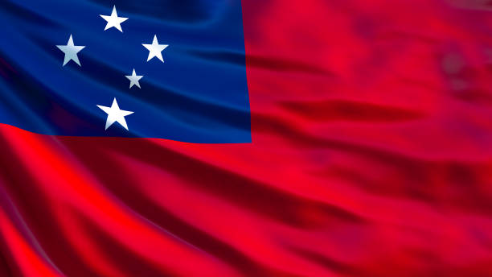
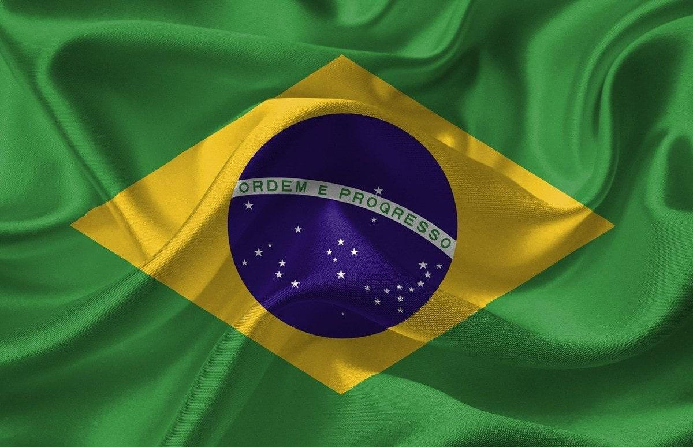
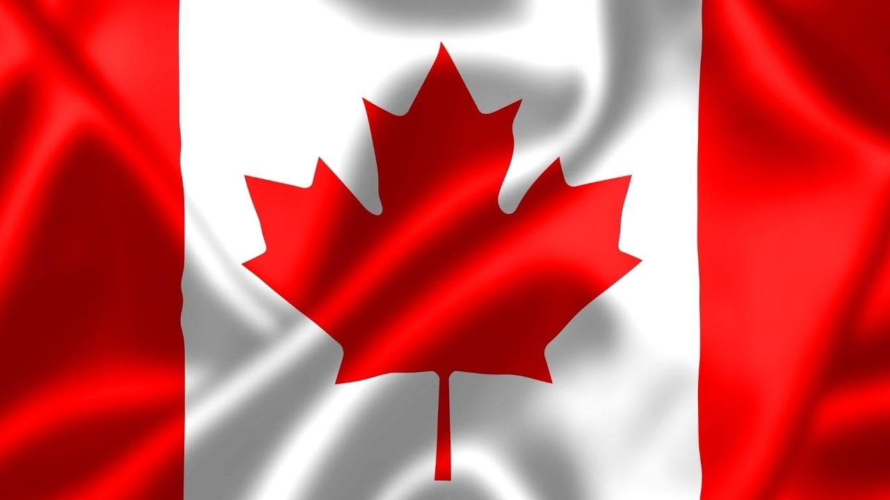

| Europa | Asia | Africa | Oceania | America |
|---|---|---|---|---|
| Alemania | Japón | Australia | Nigeria | Brasil |
| Holanda | China | Nueva Zelanda | Kenia | Canadá |
| Francia | Corea del Sur | Fiyi | Marruecos | México |
| España | Singapur | Samoa | Senegal | Argentina |
| Inglaterra | Hong Kong | Tonga | Madagascar | Colombia |
Alemania es un país de Europa occidental con un paisaje de bosques, ríos, cadenas montañosas y playas en el mar del Norte
Los Países Bajos son un país del noroeste europeo conocido por su paisaje plano de canales, campos de tulipanes, molinos y ciclovías.
Francia, en Europa Occidental, abarca ciudades medievales, villas alpinas y playas mediterráneas.
España, país de la península ibérica de Europa, incluye 17 regiones autónomas con diversas características geográficas y culturales.
Inglaterra, la cuna de Shakespeare y The Beatles, es un país de las Islas Británicas que limita con Escocia y Gales.

Japón es una nación insular del océano Pacífico con densas ciudades, palacios imperiales, parques nacionales montañosos y miles de santuarios y templos.

China es una nación muy poblada de Asia Oriental cuyos vastos paisajes abarcan praderas, desiertos, montañas, lagos, ríos y más de 14,000 km de costa.

La República de Corea, comúnmente Corea del Sur es un Estado soberano de Asia Oriental, ubicado en la parte sur de la península de Corea.

Singapur es un archipiélago tecnológico. Se convirtió en una sociedad del conocimiento, su capital humano es altamente calificado.
Hong Kong es un territorio autónomo y una antigua colonia británica en el sureste de China.

Australia es un país rodeado por los océanos Índico y Pacífico. Sus ciudades principales (Sídney, Brisbane, Melbourne, Perth y Adelaida) son costeras.

Nueva Zelanda es un país en el suroeste del océano Pacífico, que comprende dos islas principales, ambas marcadas por los volcanes y la glaciación.

Fiyi, un país del Pacífico Sur, es un archipiélago de más de 300 islas.

Muchas de sus islas tienen playas bordeadas de arrecifes e interiores escabrosos cubiertos de bosques tropicales con desfiladeros y cascadas.
Tonga es un reino polinésico de más de 170 islas del Pacífico Sur, muchas de ellas deshabitadas.
Nigeria, oficialmente República Federal de Nigeria, es un país de África occidental, que limita con Níger al norte, con Chad en el nordeste.
Kenia es un país de África Oriental con una costa en el océano Índico.
Se distingue por las influencias culturales bereberes, árabes y europeas.
Senegal es un país de la costa oeste de África con un rico legado colonial francés y muchas atracciones naturales.
Madagascar es una enorme nación insular frente a la costa sureste de África.
Brasil es un vasto país de Sudamérica que se extiende desde la Cuenca del Amazonas en el norte hasta los viñedos y las enormes cataratas del Iguazú en el sur.
Canadá es el país norteamericano que se extiende desde los Estados Unidos en el sur hasta el círculo polar ártico en el norte.
México es un país entre los Estados Unidos y América Central, conocido por las playas en el Pacífico y el golfo de México.

Argentina es un país sudamericano de gran envergadura con un terreno que incluye las montañas de los Andes, lagos glaciales y praderas en las Pampas.
Colombia es un país del extremo norte de Sudamérica. Su paisaje cuenta con bosques tropicales, las montañas de los Andes y varias plantaciones de café.